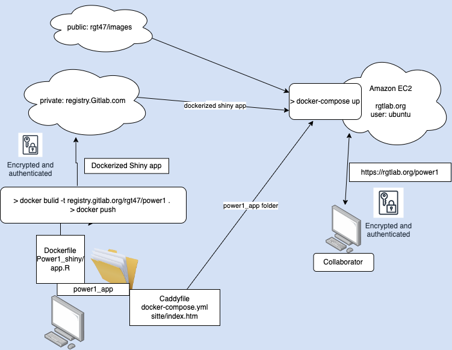

A straightforward strategy to get your Shiny app online, securely and continuously updated.
gitlab, Docker-compose, EC2 version
![]()
 Photo by Nathan Waters on Unsplash
Photo by Nathan Waters on Unsplash
1 Introduction
This is the first in a series of posts offering suggested strategies for leveraging open source technologies to provide straight-forward solutions to one of the central challenges in the practice of data science, i.e. how to effectively communicate analysis results to clients and collaborators. The strategy is based on a set of open source tools. The list of technologies (software stack) we suggest for employment is: linux, R, Shiny, Docker, docker-compose, Git, and Caddy. In this post we’ll make use of two cloud services: Gitlab and Amazon Web Service (AWS). Further posts will describe alternate services, e.g. using the low cost cloud service: Hetzner.
Also described in other posts, even more straightforward strategies that avoid Gitlab and docker-compose. These alternative approaches provides a simpler initial construction, but a more labor intensive updating process.
This initial post provides a minimal, proof-of-concept example of how to apply these technologies for hosting an interactive Shiny application.
In the following we start with a very simple, but hopefully still useful, stand-alone Shiny app developed on our local workstation. Then after some straightforward interfacing with the AWS environment, we push the Shiny app into the cloud, and end up with a secure (encrypted and authenticated) app running on a website with a custom domain name.
2 Methods
Start by creating a repository (repo) for the project. The best way to do this is to initiate the repo on gitlab and then clone it to your local workstation. In other words, log into gitlab and create a new empty repo, call it power1_app; then on your local workstation navigate to your Shiny development directory, say ~/prj, and clone the power1_app repo from gitlab:
login to
gitlab(screenshot)click on
New project. Then inrepository namefield enterpower1_app.make the repo private, we only want to share with our collaborator at this point).
leave
deployment targetempty.create the repo. Click
Create projectblue button at the bottom of the page.on your laptop cd to development repo, say ~/prj and clone the gitlab repo:
git clone https://gitlab.com/rgt47/power1_app.git
cd power1_app
git clone https://gitlab.com/rgt47/images.git
While in gitlab you should also create a second, public repo, call it images. We’ll use this repo to store screenshots of the app. After cloning the repo to ~/prj/power1_app cd into the directory and create two new sub-directories, power1_shiny and site. These directories will house our shiny app and our web site landing page, respectively.
Lets jump ahead to the point where you’ve just finished developing a new Shiny app named app.R, in the power1_shiny directory. (The methods described here apply generically to any Shiny app, but we’ll use one of our own for illustration). See the R/Shiny code for our power1_shiny app (app.R).
Consider an app that is a balance of simple and functional – one that calculates the power for a 2-sample t-test as a function of the standardized effect size.
The app is minimal. Using only base R functions, with a minimum of reactive widgets and layout commands to keep it simple while still performing a useful function.
The code is here:
show the power1_shiny/app.R code
ui <- fluidPage(
titlePanel("Power Calculator for Two Group Parallel Designs"),
sliderInput("N", "Total Sample Size:", min = 0, max = 300, value = 100),
plotOutput("plot"),
verbatimTextOutput("eff"))
server <- function(input, output, session) {
delta = seq(0, 1.5,.05)
pow = reactive(sapply(delta, function(x) power.t.test(input$N, d=x)$power ))
eff = renderText(power.t.test(input$N, power=.8)$d)
output$plot <- renderPlot({
plot(delta, pow(), cex=1.5, ylab="power")
abline(h = .8, col = "red", lwd =2.5, lty = 4)
abline(v = eff(), col = "blue",lwd =2.5, lty = 4)})
output$eff <- renderText(
paste0("Std. effect detectable with power 80% = ", eff()) )
}
shinyApp(ui, server)We can test the app locally in our development directory, power1_app, by runnning it with the following command.
R -e "library(shiny); runApp('power1_shiny/app.R', launch=T)"This command will run the R program, load the Shiny package, and launch the app in your default browser.
Figure 1 shows the Shiny app running locally in a browser, it consists of a widget to select the sample size and provide a dynamic visualization (2D plot) of the power as a function of the standardized effect size:

After we determine our app is working as designed, the next step is to set up a secure hosting environment on a virtual server. Once the app is hosted we simply need to send a link and security credentials to our collaborators for them to have secure access to the Shiny app.
There are many ways to accomplish the hosting. Here we’ll describe a straightforward and efficient approach using mainstream cloud services and open source tools. In other words, in the following we’ll describe how to ‘spin’ up a virtual server on Amazon Web Service EC2 and in just a few steps, through the application of Docker, R, Shiny, and Caddy we’ll have a fully functioning secure web app to share with our colleagues.
2.1 Hosting

Figure 2 illustrates the tools we’ll use and the flow of program and configuration files. In order to host power1 online we’ll need to complete the following tasks:
- create a virtual server (connected via ssh) with a firewall
- obtain a static IP address (to identify the server online)
- obtain a domain name (name for IP address)
- install and configure a webserver (tool to interact with https protocol requests and respond)
- obtain and install an SSL certificate (to allow encrypted communication)
- setup an authentication method (password protection)
- configure a reverse proxy method (translate https, port 443, requests to Shiny, port 3838)
At first glance these 7 requirements can appear daunting, but on closer inspection all can be met with relative ease and minimal cost ( using a cloud-hosting service, e.g. Amazon’s EC2 or Digital Ocean, and a “leased” domain name from, e.g. GoDaddy, or Amazon’s Route 53) or no cost( if you have your own server with IP address, and domain name)
2.2 Select a hosting service
There are a number of cloud based server options: Microsoft Azure, Oracle, Google Cloud, Amazon AWS EC2, Digital Ocean to name a few. Each has their own approach to setting up a custom virtual server. Several have free or low-cost service tiers available.
An overview of the process with EC2 follows. Detailed instructions for AWS EC2 are covered in an earlier post here.
- Create an account or sign in.
- Set up an interactive environment with AWS server.
- define ssh key-pair.
- configure firewall.
- request static IP.
- obtain domain name.
- select an instance and launch server.
Once the server is available connect via ssh, and login,
The only necessary software to install is docker and git. Install both with the following commands:
sudo apt install -y git
sudo snap install docker.ioOnce the host is set up and the requisite software installed we’ll have a customized virtual server wtih a static IP address, and a unique domain name and firewall in place. In other words, items 1, 2, and 3 from our hosting list above will be taken care of.
2.3 Website
To configure the web server and containerize our app we need to add three files to the repo, to go along with our Shiny app.
We’ll use a slightly indirect route to create and place the necessary files on the server but this approach will allow to do all our countinuing development on our local workstation and have the web app be automatically continually undated. We’ll create the configuration files we need on our workstation and push them gitlab and from there they can be accessed from our server.
These three configuation files are:
3 Docker
- a Docker configuration file (default name
Dockerfile)
 Photo by Ian Taylor on Unsplash
Photo by Ian Taylor on Unsplash
We’ll use docker to access R/Shiny, and docker-compose to access Caddy, our webserver. The first file is the dockerfile. Here is our minimal dockerfile:
show the Dockerfile code
FROM rocker/shiny:4.2.0
RUN rm -rf /srv/shiny-server
COPY /power1_shiny/* /srv/shiny-server/
USER shiny
CMD ["/usr/bin/shiny-server"]power1_shiny/app.R code in the default location /srv/shiny-server so we only need to start the Shiny server and it will find the shiny programThis configuration file instructs Docker to build a container based on a Rocker/Shiny image (which itself is a ubuntu image with R and Shiny installed) then copy into the container the power1_shiny.R code and finally launch Shiny on (default) port 3838. We placed the app.R code in the default location /srv/shiny-server we only need to start the server and it will find the shiny program.
Then build and push the image to the gitlab container registry.
docker build -t registry.gitlab.com/rgt47/power1_app/power1_image:v1.0 \
--platform linux/x86_64 .
docker push registry.gitlab.com/rgt47/power1_app/power1_image:v1.0- a Caddy web server configuration file (default name
Caddyfile)
We’ll use Caddy as our web server. Caddy is an open-source tool that has the very useful feature of automating the acquisition and installing of an SSL certificate. An SSL cert is required by most browsers to use the encrypted communication protocol https.
We use the caddy configuration file to specify three critical things.
- the site domain name.
- the ‘reverse proxy’ map that redirects requests to port 443 (ssl port) to port 3838 (Shiny port).
- add login credentials for all users (e.g. bob/vanilla47):
4 Caddy
Our barebones Caddyfile looks like this:
Show the Caddyfile code
# use caddy auth tool to generate a password via the `bcrypt` algorithm.
# > caddy hash-password --plaintext hiccup
rgtlab.org {
basicauth /power1/* {
Bob $2a$14$Zkx19XLiW6VYouLHR5NmfOFU0z2GTNmpkT/5qqR7hx4IjWJPDhjvG
}
root * /srv
handle_path /power1/* {
reverse_proxy power1:3838
}
file_server
}We can accomplish what we need for items 4, 5, and 7 through the Caddyfile.
Note:
- rgtlab.org is our domain name
handle_pathmaps all https requests to port 3838 where Shiny is listening.
Providing our servers domain name, rgtlab.org is sufficient to initiate an exchange with the letsencrypt service to generates an SSL certificate.
And a third file is a config file for Docker Compose. Docker Compose is a Docker module that provides a framework for running multi-container applications. This docker compose YAML file instructs Docker to containerize our Shiny app, pull a caddy webserver image from Docker Hub and create a local network for the two containers to communicate in.
- a Docker-compose configuration file (default name
docker-compose.yml).
The docker-compose.yml file:
docker-compose.yml. Show the code
version: "3.7"
services:
power1:
image: registry.gitlab.com/rgt47/power1_app/power1_image:v1.0
restart: unless-stopped
expose:
- "3838"
caddy:
image: caddy:2.6.4-alpine
restart: always
ports:
- "443:443"
volumes:
- $PWD/Caddyfile:/etc/caddy/Caddyfile
- $PWD/site:/srv
- caddy_data:/data
- caddy_config:/config
depends_on:
- power1
environment:
- HOST="rgtlab.org"
- EMAIL="rgthomas@ucsd.edu"
volumes:
caddy_data:
caddy_config:5 Landing Page
Lastly, we need an html file, index.html in a subdirectory named site that provides the landing page for our server.
index.html. Show the code
<!DOCTYPE html>
<html>
<head>
<meta charset="utf-8">
<meta http-equiv="X-UA-Compatible" content="IE=edge">
<meta name="viewport" content="width=device-width, initial-scale=1">
<title>Power Calculators</title>
<link rel="stylesheet" href="https://unpkg.com/bulma@0.9.0/css/bulma.min.css" />
</head>
<body>
<div id="app">
<section class="hero is-small">
<div class="hero-body">
<div class="container has-text-centered">
<h1 class="title">RGT Lab Power Calculators</h1>
</div>
</div>
</section>
<hr>
<div class="columns">
<div class="column is-4 is-offset-1">
<img src="https://github.com/rgt47/power0/blob/master/power1.png?raw=true"
width="200" height="250" ”float: left; padding: 3px 3px 0px 3px;” >
</div>
<div class="column is-6">
<h1 class="title"> Power1 App </h1>
<p> Power for two-sample t-test </p>
<br>
<a href="./power1/" class="button is-info">Go to app</a>
</div>
</div>
</div>
</body>
</html>At this point our power1_app repo looks like this:
.
├── Caddyfile
├── Dockerfile
├── docker-compose.yml
└── site
└── index.html6 gitlab
Push the new content to gitlab.
git pushNext login to the virtual server and clone the repo from gitlab.
ssh rgtlab.org
git clone https://gitlab.com/rgt47/power1_app.gitLastly, cd into power1_app directory and run
docker compose up -dand you’re good to go! The power1_shiny app is available at
https://rgtlab.org/7 Appendices
7.1 Tip 1. Docker on M1 macbook.
To get docker functioning properly with rocker images on M1 Mac desktop use --platform option.
docker build -t power1_shiny --platform linux/x86_64 .
docker run -d -p 80:3838 --platform linux/x86_64 power1_shiny7.2 Tip 2 add user to docker group on server.
Add ubuntu to the docker group to allow docker to run without sudo.
sudo usermod -aG docker ${USER}7.3 Tip 3 ssh config file.
For convenience, construct a config file in ~/.ssh as:
Host rgtlab.org
HostName 13.57.139.31 # static IP
User ubuntu # default user on ubuntu server
Port 22 # the default port ssh uses
IdentityFile ~/.ssh/power1_app.pemthen you can ssh into the new server with
sh> ssh rgtlab.org 8 References
9 APPENDIX
> cd /Users/zenn/Dropbox/prj/c060
> aws_create_keypair.sh power1_app
> aws_create_security_group.sh -s power1_app -h on -k on -i on -j on
> security_grp="sg-0679282d70f727f1e"
> echo $security_grp
If we need a new IP address:
> static_ip=`aws ec2 allocate-address | jq -r '.PublicIp'`
> echo $static_ip
> aws_create_instance.sh -p power1_app
instance_id="i-0ecb046262ab6efca"
aws ec2 associate-address --instance-id $instance_id --public-ip $static_ip
associate IP with domain name in Route 53
change the IP address in ~/.ssh/config
scp -i "~/.ssh/power1_app.pem" .zshrc ubuntu@rgtlab.org:~
scp -i "~/.ssh/power1_app.pem" .vimrc ubuntu@rgtlab.org:~
> ssh rgtlab.org
Check the log of your user data script in:
/var/log/cloud-init-output.log
git clone https://gitlab.com/rgt47/power1_app.git
git clone https://gitlab.com/rgt47/images.git
docker run -d \
--name=hello \
--restart=always \
-p 9000:3838 \
registry.gitlab.com/analythium/shinyproxy-hello/hello:latest
docker run -d \
--name=power1 \
--restart=always \
-p 9001:3838 \
registry.gitlab.com/rgt47/power1_app/power1_image:v1.0
http://rgtlab.org:9001/
displays power1_shiny app
git clone https://github.com/analythium/docker-compose-shiny-example.git
cd docker-compose-shiny-example.git
edit the docker-compose-prod.yml file to include domain name and email
docker compose \
-f docker-compose.yml \
-f docker-compose-prod.yml \
up -d
change docker-compose.yml to point at gitlab repo rgt47/power1_app for 'hello' app
works.
now cp docker-compose-shiny-example.git
to 'master' and begin to transform 'master' into 'power1_app'
keep logging info
to rebuild all the containers in the docker-compose.yml file:
docker compose up --build -d
remove all containers and images
docker system prune -a
if changes are made to shiny app on m1 mac. stop the compose network, pull updated container and restart.
cd power1_shiny
vim app.R
cd ~/Dropbox/prj/c060/docker_simple_power1_app
docker build -t registry.gitlab.com/rgt47/power1_app/power1_image:v1.0 --platform linux/x86_64 .
docker push registry.gitlab.com/rgt47/power1_app/power1_image:v1.0
docker compose stop
docker compose rm -f
docker compose pull
docker compose up -d
~/master-repo (main ✘)✖✹ ᐅ cat Caddyfile
rgtlab.org {
basicauth /power1/* {
Bob $2a$14$Zkx19XLiW6VYouLHR5NmfOFU0z2GTNmpkT/5qqR7hx4IjWJPDhjvG
}
root * /srv
handle_path /power1/* {
reverse_proxy power1:3838
}
file_server
}
version: "3.7"
services:
power1:
image: registry.gitlab.com/rgt47/power1_app/power1_image:v1.0
restart: unless-stopped
expose:
- "3838"
caddy:
image: caddy:2.6.4-alpine
restart: always
ports:
- "443:443"
volumes:
- $PWD/Caddyfile:/etc/caddy/Caddyfile
- $PWD/site:/srv
- caddy_data:/data
- caddy_config:/config
depends_on:
- power1
environment:
- HOST="rgtlab.org"
- EMAIL="rgthomas@ucsd.edu"
volumes:
caddy_data:
caddy_config:
~/master-repo (main ✘)✖✹ ᐅ cat site/index.html
<!DOCTYPE html>
<html>
<head>
<meta charset="utf-8">
<meta http-equiv="X-UA-Compatible" content="IE=edge">
<meta name="viewport" content="width=device-width, initial-scale=1">
<title>Power Calculators</title>
<link rel="stylesheet" href="https://unpkg.com/bulma@0.9.0/css/bulma.min.css" />
</head>
<body>
<div id="app">
<section class="hero is-small">
<div class="hero-body">
<div class="container has-text-centered">
<h1 class="title">RGT Lab Power Calculators</h1>
</div>
</div>
</section>
<hr>
<div class="columns">
<div class="column is-4 is-offset-1">
<img src="https://github.com/rgt47/power0/blob/master/power1.png?raw=true"
width="200" height="250" ”float: left; padding: 3px 3px 0px 3px;” >
</div>
<div class="column is-6">
<h1 class="title"> Power1 App </h1>
<p> Power for two-sample t-test </p>
<br>
<a href="./power1/" class="button is-info">Go to app</a>
</div>
</div>
</div>
</body>
</html>
Reuse
Citation
@online{(ryy)glennthomas2023,
author = {Ronald (Ryy) Glenn Thomas},
title = {A Straightforward Strategy to Get Your {Shiny} App Online,
Securely and Continuously Updated.},
date = {2023-07-18},
url = {https://focusonr.org/archive/posts/dockerize_compose},
langid = {en}
}